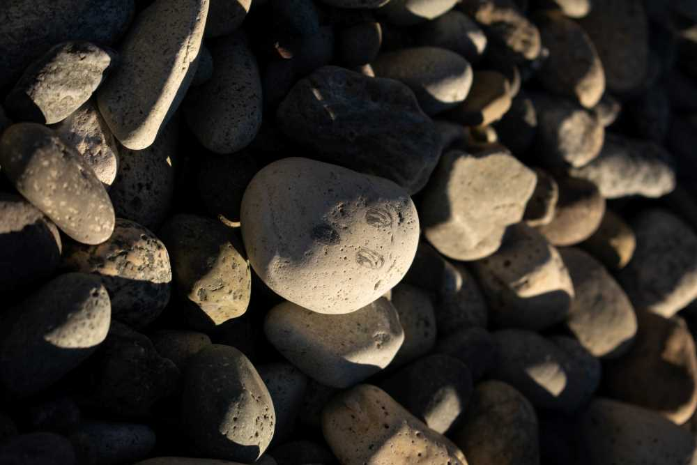

Mi nombre es Ezequiel Quintana, Soy fotografo e ilustrador, oriundo de la ciudad de San Carlos de bariloche, La cual esta ubicada en la Patagonia Argentina. Tengo 24 años. Me dedico a la fotografía hace 6 años, eh trabajo tanto en eventos sociales como en muestras de fotografía. Busco retratar lo único y hermoso que es nuestra patagonia Argentina, mostrando paisajes y personasa que me voy encontrando en mi camino y eventos en los cuales participo. Tambien suelo ilustrar fotografías que hago, mas que nada retratos, buscando mostrar de alguna otra manera la escencia de mis fotos y las personas que elijo fotografiar.
Quien soy y que hago
